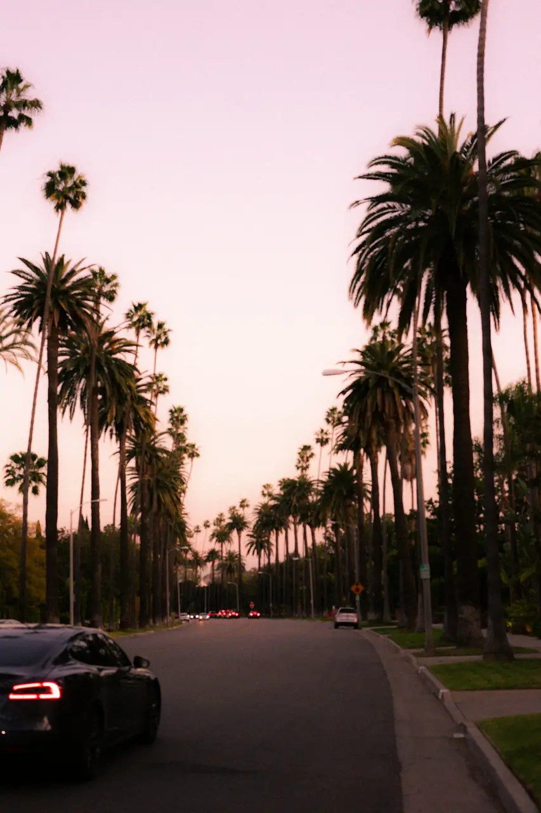

5-Day Southern California Itinerary: Los Angeles to San Diego
· By GoldenPath Guide Editorial Team
Five days is just enough to roll down the coast from Los Angeles to San Diego without sprinting. The trick is picking a base each night and letting the miles do the work. This route hits the icons, a stretch of good beaches and a couple of laid-back neighborhoods, with overnights that keep the driving short.
Route at a Glance
| Day | Focus | Overnight |
|---|---|---|
| 1 | Arrive & Santa Monica | Santa Monica |
| 2 | Hollywood & Beverly Hills | Santa Monica |
| 3 | Coast to Orange County | Huntington Beach |
| 4 | North San Diego & La Jolla | San Diego |
| 5 | San Diego & depart | — |
Day 1: Arrive & Explore Santa Monica
Land in Los Angeles, drop the bags and get to the sand. Spend the afternoon on the beach and the famous Santa Monica Pier, then walk the pedestrian-only Third Street Promenade and catch the sunset over the Pacific.
- Santa Monica Pier — the classic first stop.
- Third Street Promenade — shopping and street performers.
- Palisades Park — clifftop ocean views.
Day 2: Hollywood & Beverly Hills
Devote the day to L.A.’s icons. Walk the Hollywood Walk of Fame and the TCL Chinese Theatre, then drive up to the Griffith Observatory for a sweeping view of the skyline and the Hollywood sign. Wind down on Rodeo Drive in Beverly Hills.
- Walk the Hollywood Walk of Fame.
- Get your photo of the Hollywood sign (best from Griffith Observatory).
- Browse Rodeo Drive in Beverly Hills.
- Wrap up at The Grove or Farmers Market for dinner.
Day 3: Coast to Orange County
Drive south along the coast into Orange County. Detour past Venice Beach on the way out, then wander the galleries and coves of Laguna Beach and overnight in Huntington Beach, the self-proclaimed “Surf City USA.”
- Venice Beach — boardwalk and street performers.
- Laguna Beach — art galleries and scenic coves.
- Huntington Beach — surf culture and a lively pier.
Day 4: North San Diego & La Jolla
Head south into San Diego County. Meet the sea lions at La Jolla Cove, walk the coves and cliffs of Torrey Pines, and drive down to the beach at La Jolla Shores. Overnight in central San Diego.
- La Jolla Cove — watch sea lions and seals.
- Torrey Pines State Reserve — coastal cliff trails.
- Balboa Park — if time permits, catch its gardens in the evening.
Day 5: San Diego Highlights & Depart
Make the most of the last day. Start at the sprawling Balboa Park or the San Diego Zoo, walk the historic Gaslamp Quarter, and take in the waterfront. From there it is a short hop to San Diego International Airport.
- Morning — Balboa Park or the San Diego Zoo.
- Midday — Gaslamp Quarter and the waterfront.
- Afternoon — head to the airport for your flight home.
Tips for This Route
Rent a car — it’s the easiest way to cover a region this spread out. Book lodging ahead, especially in Santa Monica and San Diego in peak season. And stay flexible: the weather and crowds can shift plans, and that is half the fun.
Where to Stay Each Night
Nights one and two belong in Santa Monica, within walking distance of the sand. Ocean Avenue hotels run $250 to $450 a night in June through August, with parking adding $40 to $60 a night — factor that line item in before comparing rates, since it changes the math fast. The streets around Ocean and Montana Avenues hold quieter boutique options, while the blocks near the pier keep the noise going past midnight. Night three shifts to Huntington Beach, where Main Street hotels run $200 to $350 and many vacation rentals include free parking, a real saving. Nights four and five belong in San Diego: Old Town runs $180 to $280 with easy trolley access, the Gaslamp runs $220 to $320 with nightlife outside the door. Book June-through-August stays six to eight weeks out; spring and fall dates can wait three to four weeks.
Getting Around: Airports, Metro and Parking
Book an open-jaw flight — into LAX, home from SAN — and skip the two-hour backtrack north on the last day. LAX to Santa Monica runs 30 to 60 minutes by rideshare at $30 to $50; the Metro Rail connection cuts that cost to under $5 but adds 30 minutes. Los Angeles freeway traffic peaks 7 to 10 a.m. and 4 to 7:30 p.m., so plan sightseeing drives for midday. Beach-city parking meters charge $2 to $4 an hour, and municipal lots run $15 to $25 a day; Huntington Beach lots near Main Street fill by 11 a.m. on summer weekends, so arrive before 10 or park inland and walk. In San Diego, the Old Town trolley station gives free park-and-ride access to downtown and the border line, and the Coronado Ferry ($8 each way) beats bridge traffic with a harbor view attached.
Passes, Tickets and What to Skip
Run the numbers on a sightseeing pass before buying: a three-attraction Los Angeles pass near $100 pays off only if the gate prices of the chosen stops total more — at $30 to $40 per attraction, two big stops plus a bus tour usually break even. Griffith Observatory admission is free, but the lot fills by noon on weekends; the DASH bus from the Vermont/Sunset Metro station costs 50 cents and drops off at the door. The San Diego Zoo runs about $70 for adults, so pair it with Balboa Park museums on a Tuesday, when several offer discounted or resident-free entry worth checking. Skip the Hollywood Walk of Fame at midday, when crowds peak and photos get hard — go before 10 a.m. Skip the Santa Monica-to-LAX drive after 3 p.m. on a weekday; shift departures to midday and reclaim an hour.